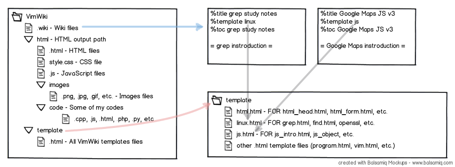

下载安装文件vimwiki-N-N.vba.gz
直接在vim中打开该文件，执行以下命令安装：
:so %
解压完成后你可能还需要重建帮助文件索引。请执行
:helptags $VIMFILES/doc
其中\(VIMFILES就是您的vimfiles目录。这是需要在vimrc中定义的系统变量，Windows下应该是\)VIM/vimfiles，Linux下是~/.vim/。如果vimrc没有显式指定，可以加上：
if has("win32")
let $VIMFILES = $VIM.'/vimfiles'
else
let $VIMFILES = $HOME.'/.vim'
endif
" 官方建议
set nocompatible
filetype plugin on
syntax on
" ===========================
"
" VimWiki
"
" ===========================
" 多个wiki项目
let g:vimwiki_list = [{'path': '~/vimwiki/',
\ 'path_html': '~/vimwiki/html/',
\ 'template_path': '~/vimwiki/template/',
\ 'template_default': 'template',
\ 'template_ext': '.htm'}
\,{'path': '~/workspace/study/vimwiki/',
\ 'path_html': '~/workspace/study/vimwiki/html/',
\ 'template_path': '~/workspace/study/vimwiki/template/',
\ 'template_default': 'template',
\ 'html_header': 'header.htm',
\ 'html_footer': 'footer.htm',
\ 'auto_export': 1,
\ 'diary_link_count': 5,
\ 'template_ext': '.htm'}
\]
" 是否在词条文件保存时就输出html这个会让保存大词条比较慢所以默认没有启用
" 有需要的话就把这一行复制到对应项目里去
" \ 'auto_export': 1,
" 对中文用户来说，我们并不怎么需要驼峰英文成为维基词条
let g:vimwiki_camel_case = 0
" 标记为完成的checklist项目会有特别的颜色
let g:vimwiki_hl_cb_checked = 1
" 我的vim是没有菜单的，加一个vimwiki菜单项也没有意义
let g:vimwiki_menu = ''
" 是否开启按语法折叠会让文件比较慢
"let g:vimwiki_folding = 1
" 是否在计算字串长度时用特别考虑中文字符
" let g:vimwiki_CJK_length = 1
" 指定可以用的html标签
let g:vimwiki_valid_html_tags='b,i,s,u,sub,sup,kbd,del,br,hr,div,code,h1'
" 不列出来的，会作聪明地在你的链接后面再加上 .html
let g:vimwiki_file_exts = 'c, cpp, wav, txt, h, hpp, zip, sh, awk, ps, pdf'
" 如果生成HTML的目录下有手工hack的html文件，也会被无情的删除，
" 选项配置用户html文件，不被自动删除。
let g:vimwiki_user_htmls = 'contact.html, canvas-1.html, html.html'
map <F5> :Vimwiki2HTML<cr>
map <S-F5> :VimwikiAll2HTML<cr>
{'path': '~/workspace/study/vimwiki/',
\ 'path_html': '~/workspace/study/vimwiki/html/',
\ 'template_path': '~/workspace/study/vimwiki/template/',
\ 'template_default': 'template',
\ 'html_header': 'header.htm',
\ 'html_footer': 'footer.htm',
\ 'template_ext': '.htm',
\ 'diary_link_count': 5,
\ 'auto_export': 1 }
综上，template_path/template_default.template_ext就是模板了
目录的结构见：

控制符<leader>默认为反斜杠\。
:h vimwiki查看wiki的帮助。
%toc 自动生成的目录
%title 指定HTML文档的title
%nohtml 告诉vimwiki不为某条目生成HTML文件。即使你在该条目打开时为它单独执行:Vimwiki2HTML也不会生成
= 标题一 =
== 标题二 ==
=== 标题三 ===
==== 标题四 ====
===== 标题五 =====
====== 标题六 ======
= 升高标题级别（和+是同一个键）。
- 降低标题级别。
WikiItem 大写开头的驼峰英文会被自动当作一个维基词条，
并添加链接
!TextText 不要链接指定的 !WikiWord
[[Wiki Item]] 这是手动建立维基词条的方式
[[wiki item|description]] 输出HTML时显示description，链到 wiki item
http://site/ :: 自动连接 [http://site/ home page] :: 带描述的连接 [[http://site/|desc]] :: 表格中不能用 [[http://site/][desc]] :: 表格中能用 http://site/pic.jpg :: 解析为图片 [[images/pic.jpg]] :: 链接到本地图片
打开链接时，如果目标页面不存在，会自动新建
生成<pre>标签：
print "hello" 缩进四个字符
{{{attr=value与}}}包起的多行内容，生成的格式为：
<pre attr='value'> print "hello" </pre>
生成<code>标签：
`print "hello"` SHIFT + 1
| 表格 | 表格 | 表格 | | 表格 | 表格 | 表格 | | 表格 | 表格 | 表格 |
无序列表：*和-是等价的，后面必须跟一个空格
* 无序列表 条目一 * 无序列表 条目二 - 子列表 条目一 - 子列表 条目二
有序列表
# items # items # items # items
定义列表
define :: desption define :: desption define :: desption define :: desption
*粗体* _斜体_ ~~删除线~~ ^上标^ ,,下标,, <!- - 注释 - ->
使用快捷键<leader>w<leader>w可以快速编辑当天的日记。还可以配合Calendar插件轻松管理你的日记。
" calendar map <F8> :Calendar<cr>
按 F8 调出日历窗口，按 q 退出。
在日期上点回车，就可以编辑当天的日记了！
PS: 按左右键在前后一个月里跳转，按上下键在前后一年跳转。按 t 回到当天。当然，Vim 默认的上下左右 hjkl 也是能用的。